<!DOCTYPE html><html lang="ko"><head><meta charset="utf-8"><meta name="viewport" content="width=device-width,initial-scale=1">
<title>9회차 · 테트리스 게임 프로젝트 — 설계와 프롬프트</title>
<link rel="stylesheet" href="style.css?v=10">
<style>
/* 9회차 전용 — 테트로미노 뷰어 · 프롬프트 조립기 · 점수 계산기 */
.tetro{border:1px solid var(--line);border-radius:4px;background:var(--ink2);padding:20px;margin:16px 0}
.tetro .picks{display:flex;gap:6px;flex-wrap:wrap;margin-bottom:14px}
.tetro .picks button{font-family:var(--serif);font-size:16px;font-weight:800;color:var(--mut);border:1px solid var(--line2);
 background:transparent;border-radius:3px;width:42px;height:38px;cursor:pointer;transition:.14s}
.tetro .picks button:hover{color:var(--tx);border-color:var(--accent)}
.tetro .picks button.on{color:var(--ink);background:var(--accent);border-color:transparent}
.tetro .stage{display:grid;grid-template-columns:1fr 210px;gap:18px;align-items:start}
@media(max-width:700px){.tetro .stage{grid-template-columns:1fr}}
.tetro canvas{width:100%;max-width:340px;background:#0a0b10;border:1px solid var(--line);border-radius:3px;display:block}
.tetro .info{font-size:12.5px;color:var(--mut);line-height:1.85}
.tetro .info b{color:var(--accent)}
.tetro .rot{font-family:var(--serif);font-size:30px;font-weight:800;color:var(--accent);line-height:1}
.pb{border:1px solid var(--line);border-radius:4px;background:var(--ink2);padding:20px;margin:16px 0}
.pb label{display:block;font-size:12.5px;font-weight:700;color:var(--tx);margin:12px 0 5px}
.pb .hint2{font-size:11.5px;color:var(--dim);margin-bottom:6px;line-height:1.65}
.pb input,.pb textarea{width:100%;background:rgba(255,255,255,.04);border:1px solid var(--line);border-radius:3px;
 color:var(--tx);padding:10px 12px;font-size:13px;font-family:var(--sans);line-height:1.7;resize:vertical}
.pb input:focus,.pb textarea:focus{outline:0;border-color:var(--accent)}
.pb .out{margin-top:16px;background:#0a0b10;border:1px solid var(--line);border-radius:3px;padding:14px 16px;
 font-size:12.5px;line-height:1.95;color:#d8dae4;white-space:pre-wrap}
.pb .out .hd3{color:var(--accent);font-weight:700}
.sc{border:1px solid var(--line);border-radius:4px;background:var(--ink2);padding:20px;margin:16px 0}
.sc .lines{display:flex;gap:8px;flex-wrap:wrap;margin-bottom:14px}
.sc .lines button{font-size:12.5px;font-weight:700;color:var(--mut);border:1px solid var(--line2);background:transparent;
 border-radius:3px;padding:9px 15px;cursor:pointer;font-family:var(--sans)}
.sc .lines button:hover{color:var(--tx);border-color:var(--accent)}
.sc .tot2{display:flex;align-items:baseline;gap:10px;margin-top:6px}
.sc .tot2 b{font-family:var(--serif);font-size:38px;font-weight:800;color:var(--accent);line-height:1}
.sc .log{margin-top:12px;font-size:12.5px;color:var(--mut);line-height:1.9;max-height:120px;overflow-y:auto;
 border-left:2px solid var(--line2);padding-left:13px}
</style></head><body>

<div class="lhead" id="lhead"></div>
<div class="bnav" id="bnav"></div>
<div id="blocks"></div>
<div id="timer"></div>

<footer><div class="wrap-n">
  2026-2 온라인 공동교육과정 · 인공지능 융합프로젝트 — 대전대신고등학교 하진수<br>
  교과서 Ⅲ. 융합 프로젝트 구현 <b>130~137쪽</b> ·
  <a href="index.html" style="color:var(--accent)">운영실 메인</a> ·
  <a href="lesson08.html" style="color:var(--accent)">← 이전 회차</a> ·
  <button class="tbtn ghost" style="margin-left:6px" onclick="resetLesson()">이 회차 기록 초기화</button>
</div></footer>

<script>
const LESSON={
n:9,date:"2026.11.02",dow:"월",time:"17:00~21:00",ch:"33~36차시",mode:"원격 수업",
title:"테트리스 게임 프로젝트 — 설계와 프롬프트",
goals:[
 "파이썬으로 테트리스를 제작할 수 있다.",
 "생성형 인공지능을 활용해 프로젝트를 설계하고, 코드 생성 · 수정 · 디버깅을 협력적으로 수행할 수 있다.",
 "게임 제작 과정을 통해 프로그래밍 논리, 알고리즘 사고력, 문제 해결 능력을 기를 수 있다."],
breaks:[{after:3,mins:10},{after:4,mins:10}],
blocks:[

/* ============ 0. 도입 ============ */
{kind:"open",nav:"도입",mins:10,title:"코드를 한 줄도 안 쓰고 게임을 만들 수 있을까",
 sub:"오늘부터 성격이 완전히 다른 프로젝트입니다. 데이터를 분석하는 대신 <b>프로그램을 설계</b>합니다.",
 sections:[
 {n:"01",h:"오늘의 질문",
  html:`<div class="hook"><div class="hk">Hook</div>
   <div class="hq">&ldquo;테트리스 만들어 줘&rdquo;라고 하면<br>AI가 만들어 줄까?</div>
   <p>만들어 줍니다. 그런데 <b>여러분이 원한 게임은 아닐</b> 겁니다.
   점수는 어떻게 매길지, 다음 블록을 보여 줄지, 일시 정지는 어떻게 할지 — <b>정하지 않은 것은 AI가 마음대로 정합니다.</b>
   <br><br>오늘은 코드를 한 줄도 쓰지 않습니다. 대신 <b>무엇을 만들 것인지 정확히 적는 법</b>을 배웁니다.
   그게 끝나면 코드는 다음 시간에 <b>10분</b>이면 나옵니다.</p></div>
   <div class="ask"><div class="ah">발문 · 채팅창에</div>
   <ol>
    <li>테트리스에서 <b>한 줄을 지우면 몇 점</b>인가요? 네 줄을 한 번에 지우면요?</li>
    <li>여러분이 아는 테트리스에는 <b>다음 블록 미리보기</b>가 있었나요? 없으면 어떻게 달라질까요?</li>
    <li>&ldquo;그건 알아서 해 줘&rdquo;라고 맡기면 어떤 일이 생길까요?</li>
   </ol></div>`},
 {n:"02",h:"출결과 준비 확인",
  html:`<div class="box warn"><b class="t">아나콘다 · Spyder · pygame 설치는 하셨나요?</b>
   지난 시간에 미리 설치해 오라고 안내했습니다. 오늘은 <b>설계</b>만 하므로 설치가 안 되어 있어도 수업은 따라올 수 있지만,
   <b>10회차에는 반드시 필요</b>합니다. 아직이라면 오늘 과제 시간에 함께 잡겠습니다.</div>
   <div class="box"><b>확인해 주세요</b>
   <ul>
    <li>카메라를 켜고 이름을 <b>학교명_이름</b> 형식으로 바꿔 주세요.</li>
    <li>교과서 <b>130~137쪽</b>을 펴 두세요. Ⅲ단원 <b>2. 테트리스 게임 프로젝트</b>입니다.</li>
    <li>생성형 AI를 열어 두세요. 오늘 <b>프롬프트를 설계</b>합니다.</li>
    <li>모둠은 7~8회차와 <b>동일</b>하게 진행합니다.</li>
   </ul>
   <div class="mini"><span>출결 1차 · 지금</span><span>2차 · 강의 종료 시</span><span>3차 · 토의 종료 시</span></div></div>
   <div class="box tip"><b>지난 프로젝트 마무리 확인</b> · 스마트 화분 <b>시연 영상</b>은 찍어 두셨나요?
   12회차 성과공유회가 3주 뒤입니다. 아직이라면 이번 주에 꼭 찍어 두세요.</div>`},
 {n:"03",h:"이번 프로젝트와 SDGs",
  lead:"교과서 130쪽. 이번 프로젝트는 SDGs 세 가지와 연결됩니다.",
  html:`<figure class="fig narrow">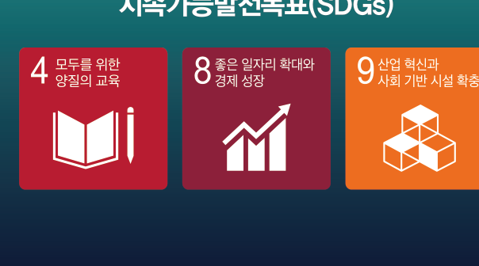
   <figcaption><b>교과서 130쪽</b> 4 모두를 위한 양질의 교육 · 8 좋은 일자리 확대와 경제 성장 · 9 산업 혁신과 사회 기반 시설 확충</figcaption></figure>
   <div class="box warn"><b class="t">이번 시간 과제</b>
   오늘날 게임 산업은 단순한 오락의 수단을 넘어 <b>교육, 의료, 국방, 문화</b> 등 다양한 분야와 융합되어 활용되고 있으며, 세계적으로 빠르게 성장하고 있는 디지털 산업 중 하나이다.
   특히 게임은 사용자와의 상호 작용을 기반으로 하여 <b>몰입감 있는 경험</b>을 제공할 수 있기 때문에, 그 활용 가능성과 산업적 가치가 매우 높다고 평가되고 있다.
   <br><br>그중 테트리스는 간결한 규칙 속에서 <b>블록의 무작위 생성, 회전 처리, 충돌 판정, 라인 삭제와 점수 계산</b> 같은 핵심 기법이 응축된 대표적 예시로,
   많은 프로그래머들이 입문 단계에서 이를 구현하며 논리적 사고력과 알고리즘 설계 능력을 기르고 있다.
   <br><br>테트리스 제작을 통해 게임의 기본 구조와 제작 절차를 단계적으로 익히고, <b>생성형 인공지능을 협력 도구로 활용해</b> 프로젝트 수행 역량을 길러 보자.</div>`,
  pages:[{p:130,t:"2. 테트리스 게임 프로젝트 · 학습 목표 · SDGs · 이번 시간 과제"}]},
 {n:"04",h:"오늘의 흐름 — 코드는 다음 시간에",
  html:`<div class="flow">
   <div class="fstep"><div class="n">STEP 1</div><div class="t">문제 인식</div><div class="d">강의 ① · 게임의 전체 흐름 파악</div></div>
   <div class="fstep"><div class="n">STEP 2</div><div class="t">탐구 계획</div><div class="d">강의 ②③ · 기능 · 화면 · 편의성 · 프롬프트 설계</div></div>
   <div class="fstep" style="opacity:.5"><div class="n">STEP 3</div><div class="t">실행 및 탐구</div><div class="d">10회차</div></div>
   <div class="fstep" style="opacity:.5"><div class="n">STEP 4</div><div class="t">결과 공유<br>및 성찰</div><div class="d">11~12회차</div></div>
  </div>
  <div class="box tip"><b>오늘의 한 문장</b> · <b>설계하지 않은 것은 만들어지지 않는다.</b>
  오늘 적는 요구 사항이 정확할수록 다음 시간이 편해집니다.</div>`}]},

/* ============ 1. 강의 ① ============ */
{kind:"lecture",nav:"강의 ①",mins:30,title:"1단계 문제 인식 — 테트리스를 분해하기",
 sub:"33차시 — 익숙한 게임을 <b>만드는 사람의 눈</b>으로 다시 봅니다. 교과서 131~132쪽.",
 sections:[
 {n:"01",h:"테트리스는 왜 좋은 예시인가",
  lead:"테트리스는 세계적으로 가장 널리 알려진 고전 퍼즐 게임입니다. 겉보기에는 단순한 블록 쌓기 게임처럼 보이지만, <b>블록 생성, 회전, 충돌 판정, 점수 계산 같은 기능이 복합적으로 얽혀 있어</b> 게임 제작을 배우기에 좋은 예시입니다.",
  html:`<figure class="fig">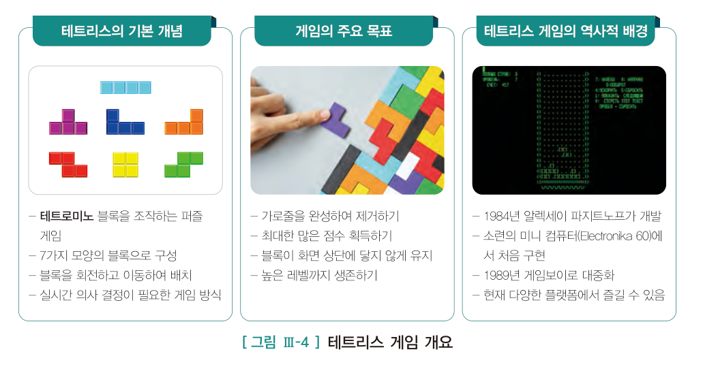
   <figcaption><b>교과서 131쪽 · 그림 Ⅲ-4</b> 테트리스 게임 개요 — 기본 개념 · 주요 목표 · 역사적 배경</figcaption></figure>
   <div class="grid g3">
    <div class="card"><h4>기본 개념</h4><p>· <b>테트로미노</b> 블록을 조작하는 퍼즐 게임<br>· 7가지 모양의 블록으로 구성<br>· 블록을 회전하고 이동하여 배치<br>· 실시간 의사 결정이 필요한 게임 방식</p></div>
    <div class="card"><h4>주요 목표</h4><p>· 가로줄을 완성하여 제거하기<br>· 최대한 많은 점수 획득하기<br>· 블록이 화면 상단에 닿지 않게 유지<br>· 높은 레벨까지 생존하기</p></div>
    <div class="card"><h4>역사적 배경</h4><p>· 1984년 <b>알렉세이 파지트노프</b>가 개발<br>· 소련의 미니 컴퓨터(Electronika 60)에서 처음 구현<br>· 1989년 게임보이로 대중화<br>· 현재 다양한 플랫폼에서 즐길 수 있음</p></div>
   </div>
   <div class="box"><b>테트로미노 (tetromino)</b> · 정사각형 <b>네 개</b>의 변을 따라 이어 만들어진 도형으로, 테트리스에서 사용하는 기본 블록 모양을 말합니다.
   &lsquo;테트라(4)&rsquo;와 &lsquo;도미노&rsquo;를 합친 말입니다.</div>`,
  pages:[{p:131,t:"1 문제 인식 · 그림 Ⅲ-4 게임 개요 · 그림 Ⅲ-5 플로 차트"}]},
 {n:"02",h:"일곱 가지 블록을 직접 돌려 보기",
  lead:"7가지 테트로미노가 <b>왜 7가지인지</b>, 회전하면 어떻게 되는지 확인해 보세요. 블록을 누르면 90도씩 회전합니다.",
  html:`<div class="tetro">
   <div class="picks" id="tPicks"></div>
   <div class="stage">
    <canvas id="tCvs" width="340" height="340" title="눌러서 회전"></canvas>
    <div class="info">
     <div class="rot"><span id="tRot">0</span>°</div>
     <div style="margin-top:10px" id="tDesc">—</div>
     <div style="margin-top:14px">
      <button class="tbtn ghost" onclick="tRotate()">90° 회전</button>
      <button class="tbtn ghost" onclick="tReset()">되돌리기</button></div>
     <div style="margin-top:14px;color:var(--dim);font-size:11.5px;line-height:1.75">
      캔버스를 눌러도 회전합니다.<br>표준 보드는 <b>가로 10칸 × 세로 20칸</b>입니다.</div>
    </div>
   </div>
  </div>
  <div class="ask"><div class="ah">발문 · 만드는 사람의 눈으로</div>
   <ol>
    <li><b>O 블록</b>을 회전시켜 보세요. 무엇이 달라지나요? 코드에서 이 경우를 어떻게 처리해야 할까요?</li>
    <li><b>I 블록</b>이 벽에 붙어 있을 때 회전시키면 벽을 뚫고 나갈 수 있습니다. 이걸 어떻게 막아야 할까요?
     <span style="color:var(--dim)">→ 이것이 &lsquo;충돌 판정&rsquo;입니다. 회전에도 충돌 판정이 필요합니다.</span></li>
    <li>블록이 <b>7가지뿐</b>인 이유는 무엇일까요? 정사각형 4개를 이어 붙이는 방법이 그것뿐일까요?</li>
   </ol></div>`},
 {n:"03",h:"게임의 전체 흐름 파악하기",
  lead:"게임을 제작하기 전에 가장 먼저 해야 할 일은 <b>게임의 전체 흐름을 파악</b>하는 것입니다. 세부 기능에 들어가기 전, 시작부터 종료까지의 흐름을 정리합니다.",
  html:`<figure class="fig">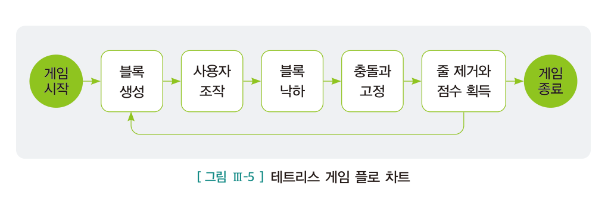
   <figcaption><b>교과서 131쪽 · 그림 Ⅲ-5</b> 테트리스 게임 플로 차트</figcaption></figure>
   <div class="flow">
    <div class="fstep"><div class="n">1</div><div class="t">게임 시작</div><div class="d"></div></div>
    <div class="fstep"><div class="n">2</div><div class="t">블록 생성</div><div class="d">모양이 다른 블록이 무작위로 생성</div></div>
    <div class="fstep"><div class="n">3</div><div class="t">사용자 조작</div><div class="d">키보드로 좌우 이동·회전</div></div>
    <div class="fstep"><div class="n">4</div><div class="t">블록 낙하</div><div class="d">시간이 지나면 아래로</div></div>
    <div class="fstep"><div class="n">5</div><div class="t">충돌과 고정</div><div class="d">바닥이나 블록에 닿으면 고정</div></div>
    <div class="fstep"><div class="n">6</div><div class="t">줄 제거와<br>점수 획득</div><div class="d">한 줄이 차면 삭제</div></div>
    <div class="fstep"><div class="n">7</div><div class="t">게임 종료</div><div class="d">화면 위까지 쌓이면</div></div>
   </div>
   <div class="box"><b>2~6이 반복됩니다</b> · 플로 차트에서 <b>블록 생성부터 줄 제거까지가 되돌아가는 고리</b>를 이룹니다.
   이 고리가 프로그램에서 <span style="font-family:var(--mono)">while</span> 반복문이 됩니다.</div>`},
 {n:"04",h:"게임 설계 준비 — 다섯 단계",
  lead:"게임의 전체 흐름을 이해했다면 이제 구현할 게임의 방향을 <b>구체화할 차례</b>입니다. 교과서 132쪽.",
  html:`<figure class="fig">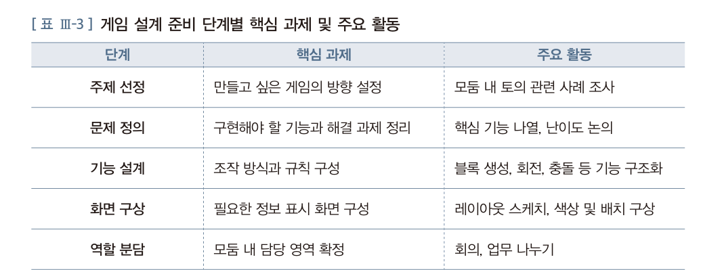
   <figcaption><b>교과서 132쪽 · 표 Ⅲ-3</b> 게임 설계 준비 단계별 핵심 과제 및 주요 활동</figcaption></figure>
   <div class="tw"><table style="min-width:560px">
    <thead><tr><th style="width:110px">단계</th><th style="width:210px">핵심 과제</th><th>주요 활동</th></tr></thead>
    <tbody>
     <tr><td><b>주제 선정</b></td><td>만들고 싶은 게임의 방향 설정</td><td>모둠 내 토의, 관련 사례 조사</td></tr>
     <tr><td><b>문제 정의</b></td><td>구현해야 할 기능과 해결 과제 정리</td><td>핵심 기능 나열, 난이도 논의</td></tr>
     <tr><td><b>기능 설계</b></td><td>조작 방식과 규칙 구성</td><td>블록 생성, 회전, 충돌 등 기능 구조화</td></tr>
     <tr><td><b>화면 구상</b></td><td>필요한 정보 표시 화면 구성</td><td>레이아웃 스케치, 색상 및 배치 구상</td></tr>
     <tr><td><b>역할 분담</b></td><td>모둠 내 담당 영역 확정</td><td>회의, 업무 나누기</td></tr>
    </tbody></table></div>
   <div class="box tip"><b>교과서의 문장</b> · &ldquo;게임 개발은 <b>코드만으로 완성되지 않는다.</b>
   주제를 정하고 기능을 구상하며, 화면을 설계하는 과정은 협업을 통해 진행된다.
   모둠 활동을 통해 아이디어를 나누고 의견을 조율하는 경험은 <b>창의적인 결과물을 만들어 내는 밑거름</b>이 된다.&rdquo;</div>
   <figure class="fig">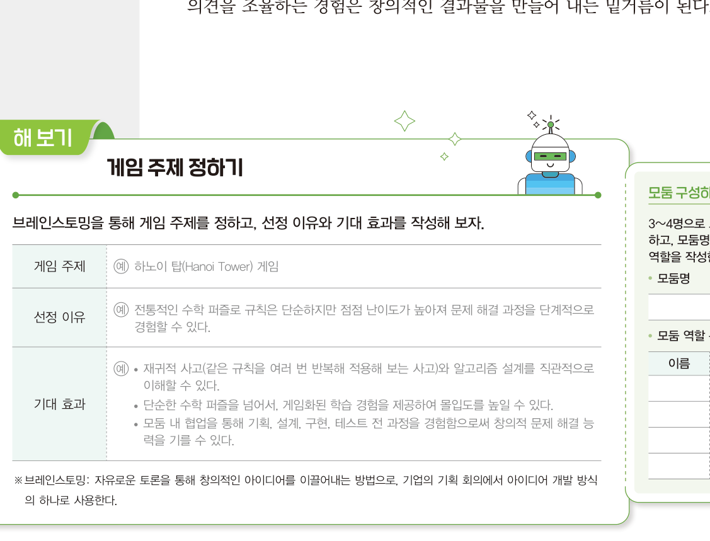
    <figcaption><b>교과서 132쪽</b> 해 보기 — 브레인스토밍으로 게임 주제 정하기. 예시로 <b>하노이 탑</b>이 제시되어 있습니다</figcaption></figure>
   <div class="box warn"><b class="t">테트리스가 아니어도 됩니다</b>교과서 예시 답안은 <b>하노이 탑</b>입니다.
   모둠에서 브레인스토밍하여 다른 주제를 골라도 좋습니다 — 하노이 탑, 2048, 지뢰 찾기, 스네이크, 뱀사다리 게임 등.
   <b>단, 오늘 설계하는 방식은 어느 게임이든 똑같이 적용됩니다.</b>
   <br><br><b>브레인스토밍</b> · 자유로운 토론을 통해 창의적인 아이디어를 이끌어내는 방법으로, 기업의 기획 회의에서 아이디어 개발 방식의 하나로 사용합니다.</div>`,
  pages:[{p:132,t:"게임 설계 준비 · 표 Ⅲ-3 · 해 보기 게임 주제 정하기"}]}],
 quiz:[
 {q:"테트리스의 기본 블록인 <b>테트로미노</b>는 무엇인가?",
  opts:["정사각형 세 개를 이어 만든 도형","정사각형 네 개의 변을 따라 이어 만든 도형","삼각형 네 개를 이어 만든 도형","원 네 개를 이어 만든 도형"],
  a:1,why:"정사각형 <b>네 개</b>의 변을 따라 이어 만들어진 도형입니다. &lsquo;테트라(4)&rsquo;와 &lsquo;도미노&rsquo;의 합성어이며, 모두 7가지 모양이 있습니다. 교과서 131쪽."},
 {q:"테트리스 게임 플로 차트에서 <b>반복되는 구간</b>은?",
  opts:["게임 시작 → 게임 종료","블록 생성 → 줄 제거와 점수 획득","게임 종료 → 게임 시작","사용자 조작만"],
  a:1,why:"<b>블록 생성 → 사용자 조작 → 블록 낙하 → 충돌과 고정 → 줄 제거와 점수 획득</b>이 고리를 이루며 반복됩니다. 이것이 프로그램의 while 반복문이 됩니다. 교과서 131쪽 그림 Ⅲ-5."},
 {q:"게임 설계 준비 다섯 단계 중 <b>&lsquo;블록 생성, 회전, 충돌 등 기능 구조화&rsquo;</b>가 주요 활동인 단계는?",
  opts:["주제 선정","문제 정의","기능 설계","화면 구상"],
  a:2,why:"<b>기능 설계</b> 단계입니다. 핵심 과제는 &lsquo;조작 방식과 규칙 구성&rsquo;입니다. 교과서 132쪽 표 Ⅲ-3."}]},

/* ============ 2. 강의 ② ============ */
{kind:"lecture",nav:"강의 ②",mins:30,title:"2단계 탐구 계획 — 기능 · 화면 · 편의성",
 sub:"34차시 — 무엇을 만들지 <b>목록으로</b> 만듭니다. 교과서 133~135쪽.",
 sections:[
 {n:"01",h:"① 기능적 요소 설계",
  lead:"기능적 요소는 게임의 핵심을 이루는 <b>논리 구조</b>로, 주제와 스토리, 규칙, 조작 방식, 그래픽과 사운드, 난이도, 점수와 보상, 레벨 및 진행 구조 등을 포함합니다.",
  html:`<figure class="fig">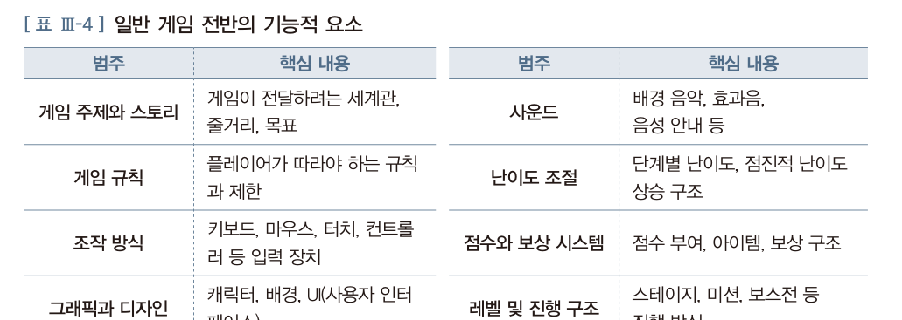
   <figcaption><b>교과서 133쪽 · 표 Ⅲ-4</b> 일반 게임 전반의 기능적 요소 — 어떤 게임에나 공통으로 적용되는 틀</figcaption></figure>
   <p>이 틀을 테트리스에 적용해 보면 다음과 같으며, 테트리스 게임의 <b>핵심 동작 원리와 규칙</b>을 정의한 것입니다.</p>
   <figure class="fig">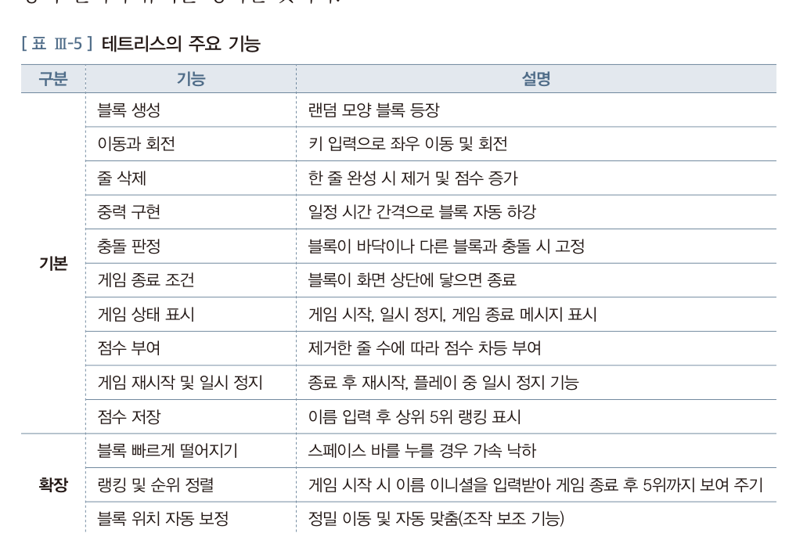
    <figcaption><b>교과서 133쪽 · 표 Ⅲ-5</b> 테트리스의 주요 기능 — 기본 9개, 확장 3개</figcaption></figure>
   <div class="tw"><table style="min-width:560px">
    <thead><tr><th style="width:60px">구분</th><th style="width:170px">기능</th><th>설명</th></tr></thead>
    <tbody>
     <tr><td rowspan="9" class="ctr"><b>기본</b></td><td><b>블록 생성</b></td><td>랜덤 모양 블록 등장</td></tr>
     <tr><td><b>이동과 회전</b></td><td>키 입력으로 좌우 이동 및 회전</td></tr>
     <tr><td><b>줄 삭제</b></td><td>한 줄 완성 시 제거 및 점수 증가</td></tr>
     <tr><td><b>중력 구현</b></td><td>일정 시간 간격으로 블록 자동 하강</td></tr>
     <tr><td><b>충돌 판정</b></td><td>블록이 바닥이나 다른 블록과 충돌 시 고정</td></tr>
     <tr><td><b>게임 종료 조건</b></td><td>블록이 화면 상단에 닿으면 종료</td></tr>
     <tr><td><b>게임 상태 표시</b></td><td>게임 시작, 일시 정지, 게임 종료 메시지 표시</td></tr>
     <tr><td><b>점수 부여</b></td><td>제거한 줄 수에 따라 점수 차등 부여</td></tr>
     <tr><td><b>게임 재시작 및 일시 정지</b></td><td>종료 후 재시작, 플레이 중 일시 정지 기능</td></tr>
     <tr><td rowspan="3" class="ctr"><b>확장</b></td><td><b>블록 빠르게 떨어지기</b></td><td>스페이스 바를 누를 경우 가속 낙하</td></tr>
     <tr><td><b>랭킹 및 순위 정렬</b></td><td>게임 시작 시 이름 이니셜을 입력받아 게임 종료 후 5위까지 보여 주기</td></tr>
     <tr><td><b>블록 위치 자동 보정</b></td><td>정밀 이동 및 자동 맞춤(조작 보조 기능)</td></tr>
    </tbody></table></div>
   <div class="box tip"><b>왜 &lsquo;기본&rsquo;과 &lsquo;확장&rsquo;을 나누나</b> · 기본 기능이 <b>하나라도 빠지면 게임이 성립하지 않습니다.</b>
   확장 기능은 없어도 게임은 돌아갑니다. 시간이 부족할 때 <b>무엇을 포기할지</b> 미리 정해 두는 것이 설계입니다.
   <br><br>2회차 개발자 인터뷰의 그 실패 — &ldquo;<b>무엇을 먼저 개발할지 우선 순위를 정하지 못하고 우왕좌왕했다</b>&rdquo;를 막는 방법입니다.</div>`,
  pages:[{p:133,t:"2 탐구 계획 · 1 기능적 요소 설계 · 표 Ⅲ-4 · 표 Ⅲ-5"}]},
 {n:"02",h:"점수 규칙을 정해 봅시다",
  lead:"교과서가 정한 점수 규칙입니다. <b>한 줄 10점, 두 줄 30점, 세 줄 50점, 네 줄 70점.</b> 왜 이렇게 매길까요?",
  html:`<div class="sc">
   <div style="font-size:13px;color:var(--mut);margin-bottom:6px">줄을 지워 보세요. 누적 점수가 계산됩니다.</div>
   <div class="lines">
    <button onclick="scAdd(1)">1줄 제거 · 10점</button>
    <button onclick="scAdd(2)">2줄 제거 · 30점</button>
    <button onclick="scAdd(3)">3줄 제거 · 50점</button>
    <button onclick="scAdd(4)">4줄 제거 · 70점</button>
    <button onclick="scReset()">처음부터</button>
   </div>
   <div class="tot2"><b id="scTot">0</b><span style="color:var(--mut)">점 · <span id="scLines">0</span>줄 제거</span></div>
   <div class="log" id="scLog">아직 지운 줄이 없습니다.</div>
   <div class="box tip" style="margin-top:14px" id="scTip">한 줄씩 네 번 지우는 것과 네 줄을 한 번에 지우는 것을 비교해 보세요.</div>
  </div>
  <div class="ask"><div class="ah">발문</div>
   <ol>
    <li>한 줄씩 <b>네 번</b> 지우면 40점, 네 줄을 <b>한 번에</b> 지우면 70점입니다. 왜 이렇게 차이를 두었을까요?</li>
    <li>이 규칙은 플레이어의 <b>행동을 어떻게 바꿀까요?</b> (위험을 감수하게 만들까요, 안전하게 만들까요?)</li>
    <li>여러분 모둠은 이 점수 규칙을 <b>그대로 쓸 건가요, 바꿀 건가요?</b> 바꾼다면 이유는요?</li>
   </ol>
   <span style="color:var(--dim);font-size:12.5px">게임 규칙 하나가 플레이 방식을 통째로 바꿉니다. 이것이 &lsquo;게임 디자인&rsquo;입니다.</span></div>`},
 {n:"03",h:"② 화면 구성 설계",
  lead:"기능 설계가 끝나면, 이를 화면에 어떻게 표현할지 구상합니다. 게임의 화면 구성은 <b>사용자가 정보를 어떻게 인식하고 조작하는지</b>를 결정짓는 중요한 단계입니다.",
  html:`<figure class="fig">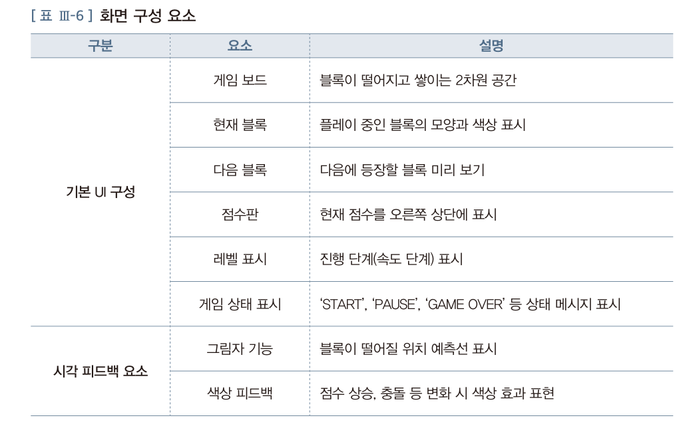
   <figcaption><b>교과서 134쪽 · 표 Ⅲ-6</b> 화면 구성 요소 — 기본 UI 구성 6가지와 시각 피드백 요소 2가지</figcaption></figure>
   <div class="grid g2">
    <div class="card"><h4>기본 UI 구성</h4><p><b>게임 보드</b> — 블록이 떨어지고 쌓이는 2차원 공간<br>
     <b>현재 블록</b> — 플레이 중인 블록의 모양과 색상<br>
     <b>다음 블록</b> — 다음에 등장할 블록 미리 보기<br>
     <b>점수판</b> — 현재 점수를 오른쪽 상단에<br>
     <b>레벨 표시</b> — 진행 단계(속도 단계)<br>
     <b>게임 상태 표시</b> — START · PAUSE · GAME OVER</p></div>
    <div class="card"><h4>시각 피드백 요소</h4><p><b>그림자 기능</b> — 블록이 떨어질 위치 예측선 표시<br>
     <b>색상 피드백</b> — 점수 상승, 충돌 등 변화 시 색상 효과</p>
     <p style="margin-top:8px;color:var(--dim)">사용자에게 &lsquo;지금 무슨 일이 일어났는지&rsquo;를 알려 주는 장치입니다.</p></div>
   </div>
   <figure class="fig">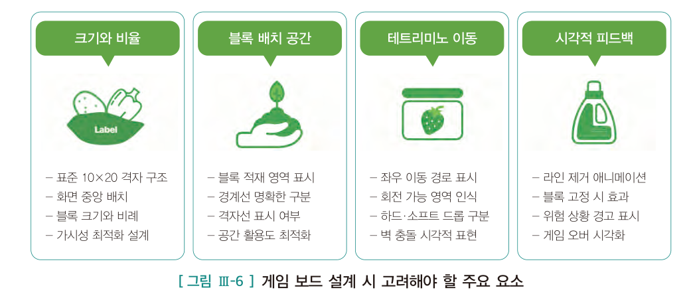
    <figcaption><b>교과서 134쪽 · 그림 Ⅲ-6</b> 게임 보드 설계 시 고려해야 할 네 가지 — 크기와 비율 · 블록 배치 공간 · 테트리미노 이동 · 시각적 피드백</figcaption></figure>
   <figure class="fig">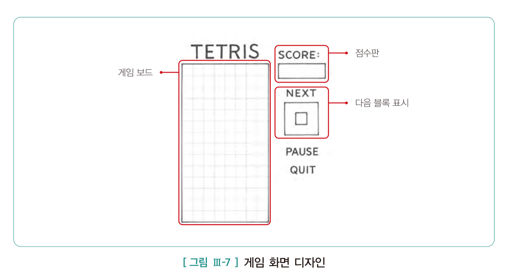
    <figcaption><b>교과서 135쪽 · 그림 Ⅲ-7</b> 게임 화면 디자인 예시 — 게임 보드, SCORE, NEXT, PAUSE, QUIT</figcaption></figure>
   <div class="doit"><div class="dh">해 보기 <span class="m">5분 · 모둠</span></div>
    <p>위 디자인을 참고해 <b>우리 모둠의 화면 스케치</b>를 그려 보세요. 종이에 그려 사진을 찍거나, 활동지에 글로 배치를 설명해도 됩니다.
    <br><b>표준 보드는 가로 10칸 × 세로 20칸</b>이고 화면 중앙에 배치합니다.</p></div>`,
  pages:[{p:134,t:"2 화면 구성 설계 · 표 Ⅲ-6 · 그림 Ⅲ-6"},{p:135,t:"그림 Ⅲ-7 게임 화면 디자인 · 3 편의성 요소 설계"}]},
 {n:"04",h:"③ 편의성 요소 설계",
  lead:"편의성 요소는 플레이어가 게임을 <b>쉽고 편하게</b> 즐길 수 있도록 돕습니다. 게임의 접근성을 높여 다양한 환경에서 누구나 편리하게 이용하도록 합니다.",
  html:`<figure class="fig">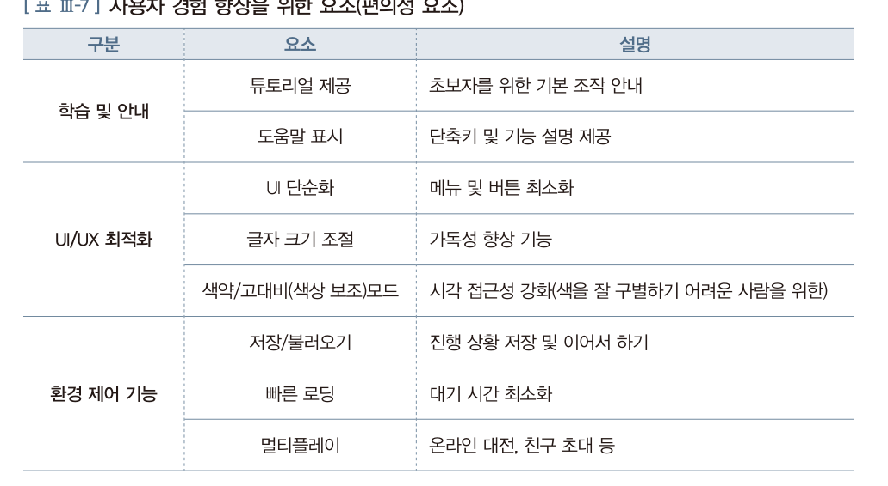
   <figcaption><b>교과서 135쪽 · 표 Ⅲ-7</b> 사용자 경험 향상을 위한 요소(편의성 요소)</figcaption></figure>
   <div class="tw"><table style="min-width:560px">
    <thead><tr><th style="width:120px">구분</th><th style="width:170px">요소</th><th>설명</th></tr></thead>
    <tbody>
     <tr><td rowspan="2"><b>학습 및 안내</b></td><td>튜토리얼 제공</td><td>초보자를 위한 기본 조작 안내</td></tr>
     <tr><td>도움말 표시</td><td>단축키 및 기능 설명 제공</td></tr>
     <tr><td rowspan="3"><b>UI/UX 최적화</b></td><td>UI 단순화</td><td>메뉴 및 버튼 최소화</td></tr>
     <tr><td>글자 크기 조절</td><td>가독성 향상 기능</td></tr>
     <tr><td><b>색약/고대비(색상 보조)모드</b></td><td>시각 접근성 강화(색을 잘 구별하기 어려운 사람을 위한)</td></tr>
     <tr><td rowspan="3"><b>환경 제어 기능</b></td><td>저장/불러오기</td><td>진행 상황 저장 및 이어서 하기</td></tr>
     <tr><td>빠른 로딩</td><td>대기 시간 최소화</td></tr>
     <tr><td>멀티플레이</td><td>온라인 대전, 친구 초대 등</td></tr>
    </tbody></table></div>
   <div class="box tip"><b>색약 모드를 눈여겨보세요</b> · 테트리스는 <b>색으로 블록을 구분</b>합니다.
   색을 구별하기 어려운 사람에게는 게임이 훨씬 어려워집니다. 남학생 약 20명 중 1명이 색각 이상입니다 — <b>우리 반에도 있을 수 있습니다.</b>
   <br><br>2회차에서 배운 <b>데이터 편향</b>이 여기서는 <b>디자인 편향</b>으로 나타납니다.
   모양이나 무늬를 함께 쓰면 해결됩니다. 여러분 게임에 넣어 보시겠습니까?</div>`}],
 quiz:[
 {q:"테트리스의 <b>기본 기능</b>에 해당하지 <b>않는</b> 것은?",
  opts:["충돌 판정","줄 삭제","랭킹 및 순위 정렬","게임 종료 조건"],
  a:2,why:"<b>랭킹 및 순위 정렬</b>은 확장 기능입니다. 기본 기능은 블록 생성·이동과 회전·줄 삭제·중력 구현·충돌 판정·게임 종료 조건·게임 상태 표시·점수 부여·재시작 및 일시 정지 9가지입니다. 교과서 133쪽 표 Ⅲ-5."},
 {q:"블록이 떨어질 위치를 미리 표시해 주는 <b>시각 피드백 요소</b>는?",
  opts:["점수판","그림자 기능","레벨 표시","다음 블록"],
  a:1,why:"<b>그림자 기능</b>입니다. 블록이 떨어질 위치를 예측선으로 표시해 조작을 돕습니다. 교과서 134쪽 표 Ⅲ-6."},
 {q:"편의성 요소 중 <b>색을 잘 구별하기 어려운 사람</b>을 위한 기능은?",
  opts:["튜토리얼 제공","UI 단순화","색약/고대비 모드","빠른 로딩"],
  a:2,why:"<b>색약/고대비(색상 보조) 모드</b>입니다. 시각 접근성을 강화합니다. 테트리스는 색으로 블록을 구분하므로 특히 중요합니다. 교과서 135쪽 표 Ⅲ-7."},
 {q:"기능을 <b>기본</b>과 <b>확장</b>으로 나누어 설계하는 가장 큰 이유는?",
  opts:["코드를 짧게 만들기 위해","시간이 부족할 때 무엇을 먼저 만들고 무엇을 포기할지 정하기 위해","AI가 이해하기 쉽게 하기 위해","점수를 높이기 위해"],
  a:1,why:"기본 기능은 하나라도 빠지면 게임이 성립하지 않습니다. <b>우선순위를 미리 정해 두는 것</b>이 설계의 핵심이며, 2회차 개발자 인터뷰의 실패담이 정확히 이 지점이었습니다."}]},

/* ============ 3. 강의 ③ ============ */
{kind:"lecture",nav:"강의 ③",mins:30,title:"4단계 프롬프트 설계 — AI에게 정확히 시키기",
 sub:"35차시 — 4회차에서 배운 원칙이 오늘 <b>주무기</b>가 됩니다. 교과서 136~137쪽.",
 sections:[
 {n:"01",h:"기능별로 나누어 요청하는 이유",
  lead:"앞의 설계 결과를 바탕으로, <b>기능별로</b> 생성형 인공지능에 요청할 프롬프트를 구체화합니다.",
  html:`<div class="box" style="border-left:2px solid var(--accent)">각 기능은 <b>독립적으로 작성</b>하지만,
   <b>이전 단계에서 구현한 코드를 확장하는 방식</b>으로 순차적으로 연결되도록 합니다. (교과서 136쪽)</div>
   <div class="box warn"><b class="t">한 번에 전부 요청하면 안 되는 이유</b>
   <ul>
    <li><b>어디가 틀렸는지 찾을 수 없습니다.</b> 300줄이 한 번에 나오면 오류가 나도 손댈 수 없습니다.</li>
    <li><b>내가 이해하지 못한 코드가 쌓입니다.</b> 교과서의 경고 — &ldquo;생성형 인공지능에 지나치게 의존하여 항상 전체 코드를 제공받는 것은
     프로그래밍을 배우는 학생들에게 <b>학습 방해 요소</b>가 될 수 있다.&rdquo;</li>
    <li><b>고칠 수가 없습니다.</b> 12회차에 &ldquo;이 부분 왜 이렇게 했어요?&rdquo;라는 질문을 받게 됩니다.</li>
   </ul>
   대신 <b>기능 하나씩</b> 요청하고, 돌아가는 것을 확인한 뒤 다음 기능을 얹습니다.
   10회차에 tetris1.py → tetris8.py로 <b>여덟 단계</b>에 걸쳐 만드는 이유입니다.</div>`},
 {n:"02",h:"교과서의 프롬프트 — 구조를 보세요",
  lead:"교과서의 프롬프트는 항상 <b>요구 사항 · 기능 요소 · 화면 요소</b> 세 칸을 먼저 정하고 그것을 문장으로 풉니다.",
  html:`<figure class="fig">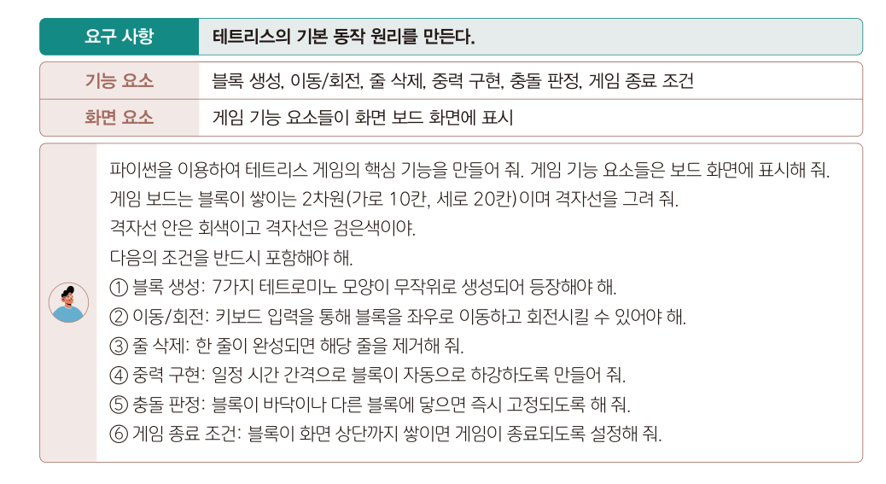
   <figcaption><b>교과서 136쪽</b> 테트리스 게임 핵심 기능 — 요구 사항 · 기능 요소 · 화면 요소, 그리고 실제 프롬프트</figcaption></figure>
   <div class="box"><b>기본 기능 프롬프트를 뜯어보면</b>
    <ul>
     <li><b>맥락</b> — &ldquo;파이썬을 이용하여 테트리스 게임의 핵심 기능을 만들어 줘&rdquo;</li>
     <li><b>화면 규격</b> — &ldquo;보드는 2차원(가로 10칸, 세로 20칸)이며 격자선을 그려 줘. 격자선 안은 회색이고 격자선은 검은색이야&rdquo;</li>
     <li><b>조건 6가지를 번호로</b> — ① 블록 생성 ② 이동/회전 ③ 줄 삭제 ④ 중력 구현 ⑤ 충돌 판정 ⑥ 게임 종료 조건</li>
    </ul>
    4회차의 <b>구체적 지시 · 명확한 단어 · 맥락 제공 · 구조 형식화</b>가 전부 들어 있습니다.</div>
   <figure class="fig">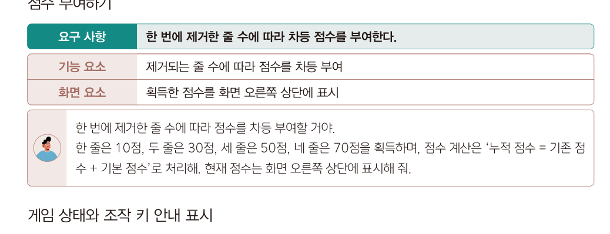
    <figcaption><b>교과서 136쪽</b> 점수 부여하기 — 숫자를 <b>정확히</b> 지정합니다</figcaption></figure>
   <figure class="fig">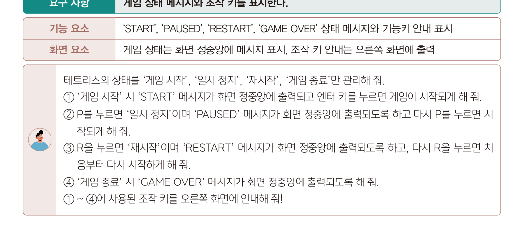
    <figcaption><b>교과서 136쪽</b> 게임 상태와 조작 키 안내 — 각 상태와 키를 하나씩 지정합니다</figcaption></figure>
   <div class="box tip"><b>눈여겨볼 점</b> · 점수 프롬프트에서 &ldquo;<b>한 줄은 10점, 두 줄은 30점, 세 줄은 50점, 네 줄은 70점</b>&rdquo;처럼
   <b>숫자를 하나도 빠짐없이</b> 적었습니다. &ldquo;점수를 적절히 부여해 줘&rdquo;라고 했다면 AI가 마음대로 정했을 겁니다.
   <br><br><b>정하지 않은 것은 AI가 정합니다.</b> 이것이 오늘의 핵심입니다.</div>`,
  pages:[{p:136,t:"4 프롬프트 설계 · (1) 기본 기능"},{p:137,t:"프롬프트 설계 (계속) — 미리보기 · 그림자 · 하드 드롭 · 랭킹"}]},
 {n:"03",h:"프롬프트 조립기 — 직접 만들어 보기",
  lead:"교과서 형식 그대로, 세 칸을 채우면 <b>바로 쓸 수 있는 프롬프트</b>가 완성됩니다. 4회차의 페르소나와 단계별 요청도 함께 넣습니다.",
  html:`<div class="pb">
   <label>1. 만들 기능의 이름</label>
   <div class="hint2">예 · 테트리스 게임 핵심 기능 / 점수 부여하기 / 다음 블록 미리보기 / 그림자 기능</div>
   <input type="text" id="pbName" placeholder="다음 블록 미리보기">

   <label>2. 요구 사항 — 한 문장으로</label>
   <div class="hint2">이 기능이 무엇을 하는지 한 문장으로. 교과서의 &lsquo;요구 사항&rsquo; 칸에 해당합니다.</div>
   <input type="text" id="pbReq" placeholder="다음에 등장할 블록을 미리 보여 준다.">

   <label>3. 기능 요소 — 무엇이 동작하는가</label>
   <div class="hint2">내부 동작을 구체적으로. 숫자와 조건을 빠짐없이 적으세요.</div>
   <textarea id="pbFunc" rows="3" placeholder="다음에 등장할 블록을 미리 정해 두고, 현재 블록이 고정되면 그 블록이 다음 블록이 되도록 한다."></textarea>

   <label>4. 화면 요소 — 어디에 어떻게 보이는가</label>
   <div class="hint2">위치·크기·색을 지정하세요. 정하지 않으면 AI가 마음대로 정합니다.</div>
   <textarea id="pbUi" rows="3" placeholder="화면 오른쪽 부분에 점수와 상태 안내 사이에 축소된 아이콘으로 표시한다."></textarea>

   <label>5. 세부 조건 (한 줄에 하나씩)</label>
   <div class="hint2">번호로 나열됩니다. 비워 두어도 됩니다.</div>
   <textarea id="pbCond" rows="4" placeholder="미리보기 블록은 실제 블록과 같은 색으로 표시해 줘&#10;미리보기 영역에는 'NEXT'라는 제목을 붙여 줘"></textarea>

   <label><input type="checkbox" id="pbPersona" checked style="width:auto;margin-right:7px;accent-color:#d8b45a">역할 부여(페르소나) 넣기</label>
   <label><input type="checkbox" id="pbCot" checked style="width:auto;margin-right:7px;accent-color:#d8b45a">단계별 설명 요청(CoT) 넣기</label>
   <label><input type="checkbox" id="pbPrev" checked style="width:auto;margin-right:7px;accent-color:#d8b45a">이전 코드를 확장하도록 요청</label>

   <div class="out" id="pbOut">—</div>
   <div style="display:flex;gap:8px;flex-wrap:wrap;margin-top:12px">
    <button class="tbtn" onclick="pbCopy()">프롬프트 복사</button>
    <button class="tbtn ghost" onclick="pbSample()">예시 채우기</button>
    <button class="tbtn ghost" onclick="pbClear()">비우기</button>
   </div>
  </div>
  <div class="box tip"><b>이 프롬프트를 저장해 두세요</b> · 교과서 136쪽 안내입니다.
  &ldquo;프롬프트 설계 단계에서 작성한 내용은 <b>별도의 파일로 저장</b>해 두면, 이후 실제 프로그램을 구현할 때 활용할 수 있다.&rdquo;
  <br><br>오늘 만든 프롬프트가 <b>10회차의 재료</b>입니다. 활동지에 모두 담아 제출하세요.</div>`},
 {n:"04",h:"10회차에 만들 여덟 단계 미리 보기",
  lead:"교과서는 기능을 여덟 단계로 나누어 코드를 확장합니다. 오늘 <b>이 중 몇 개의 프롬프트를 미리 써 두는 것</b>이 과제입니다.",
  html:`<div class="tw"><table style="min-width:600px">
   <thead><tr><th style="width:90px">파일</th><th style="width:180px">기능</th><th>핵심 요구</th></tr></thead>
   <tbody>
    <tr><td><b>tetris1.py</b></td><td>핵심 기능</td><td>블록 생성 · 이동/회전 · 줄 삭제 · 중력 · 충돌 판정 · 게임 오버</td></tr>
    <tr><td><b>tetris2.py</b></td><td>점수 부여</td><td>1줄 10점 · 2줄 30점 · 3줄 50점 · 4줄 70점, 오른쪽 상단 표시</td></tr>
    <tr><td><b>tetris3.py</b></td><td>상태와 조작 키 안내</td><td>START · PAUSED · RESTART · GAME OVER, 조작 키 안내</td></tr>
    <tr><td><b>tetris4.py</b></td><td>다음 블록 미리보기</td><td>오른쪽에 축소 아이콘으로 표시</td></tr>
    <tr><td><b>tetris5.py</b></td><td>그림자 기능</td><td>충돌 직전 위치를 계산해 반투명 표시, 이동·회전 시 갱신</td></tr>
    <tr><td><b>tetris6.py</b></td><td>블록 빠르게 떨어지기</td><td>소프트 드롭(아래 키) · 하드 드롭(스페이스 바)</td></tr>
    <tr><td><b>tetris7.py</b></td><td>글자 크기와 블록 위치</td><td>폰트 5포인트 축소, 블록 생성 위치 조정</td></tr>
    <tr><td><b>tetris8.py</b></td><td>랭킹 등록과 순위 정렬</td><td>이름과 점수를 파일에 저장, 내림차순 상위 5위 표시</td></tr>
   </tbody></table></div>
   <div class="box"><b>오늘 과제의 목표</b> · <b>tetris1~4의 프롬프트를 완성</b>하는 것입니다.
   5~8은 10회차에 만들면서 그때그때 작성해도 됩니다. 다만 <b>tetris1은 반드시 오늘 완성</b>해 오세요 — 다음 시간 첫 10분에 바로 실행합니다.</div>`}],
 quiz:[
 {q:"기능별로 프롬프트를 나누어 작성하는 이유로 옳지 <b>않은</b> 것은?",
  opts:["오류가 났을 때 어디가 문제인지 찾기 쉽다","단계마다 코드를 이해하며 넘어갈 수 있다","한 번에 전체 코드를 받는 것보다 학습에 도움이 된다","코드의 전체 길이를 줄일 수 있다"],
  a:3,why:"코드 길이가 줄어드는 것은 아닙니다. 나누는 이유는 <b>디버깅 용이성과 학습 효과</b>입니다. 교과서는 전체 코드를 통째로 받는 것이 &lsquo;학습 방해 요소&rsquo;가 될 수 있다고 경고합니다."},
 {q:"교과서의 점수 프롬프트가 <b>&ldquo;한 줄은 10점, 두 줄은 30점…&rdquo;</b>처럼 숫자를 모두 적은 이유는?",
  opts:["글자 수를 늘리기 위해","정하지 않으면 AI가 임의로 정하기 때문","점수가 높아 보이게 하려고","코드가 짧아지기 때문"],
  a:1,why:"<b>정하지 않은 것은 AI가 정합니다.</b> 4회차의 &lsquo;구조 형식화&rsquo; 원칙이며, 원하는 결과물의 형식을 명확히 알려 주어야 합니다."},
 {q:"프롬프트에 <b>&ldquo;이전 코드를 확장해서&rdquo;</b>라는 표현을 넣는 이유는?",
  opts:["코드가 짧아지기 때문","기능을 순차적으로 쌓아 올려 이전 동작이 유지되도록 하기 위해","AI가 더 빨리 답하기 때문","오류가 사라지기 때문"],
  a:1,why:"각 기능은 독립적으로 작성하되 <b>이전 단계에서 구현한 코드를 확장하는 방식</b>으로 순차적으로 연결되도록 합니다. 그래야 앞의 기능이 망가지지 않습니다. 교과서 136쪽."}]},

/* ============ 4. 과제 ============ */
{kind:"task",nav:"과제",mins:60,title:"게임 설계서와 프롬프트 작성",
 sub:"36차시 · 교과서 132~137쪽 &lsquo;해 보기&rsquo; 종합. 다음 시간에 <b>바로 실행할 재료</b>를 만듭니다.",
 sections:[
 {n:"01",h:"오늘 만들어야 할 것",
  html:`<div class="flow">
   <div class="fstep"><div class="n">1</div><div class="t">게임 주제와<br>선정 이유</div><div class="d">브레인스토밍 결과</div></div>
   <div class="fstep"><div class="n">2</div><div class="t">기능 · 편의성<br>요소 목록</div><div class="d">기본과 확장 구분</div></div>
   <div class="fstep"><div class="n">3</div><div class="t">화면 구성<br>스케치</div><div class="d">배치와 색상</div></div>
   <div class="fstep"><div class="n">4</div><div class="t">프롬프트<br>4개 이상</div><div class="d">tetris1~4에 해당</div></div>
  </div>
  <div class="box warn"><b class="t">설치 점검 시간도 함께</b>아나콘다 · Spyder · pygame 설치가 안 된 학생은
   과제 시간 <b>앞 20분</b>을 설치에 쓰세요. 소회의실을 따로 열어 드립니다.
   <br><br>설치 순서 · 아나콘다 설치 → Anaconda Prompt에서 <span style="font-family:var(--mono)">conda create -n tetris python=3.11</span> →
   <span style="font-family:var(--mono)">conda activate tetris</span> → <span style="font-family:var(--mono)">pip install pygame</span> → Spyder에서 해당 환경 선택
   <br><br>교과서 안내 · Spyder에서 실행할 때 pygame이 없으면 콘솔에 오류가 납니다. 그때는 <b>오류 메시지를 그대로 복사</b>해 AI에게 물어보세요.</div>`},
 {n:"02",h:"프롬프트 작성 체크리스트",
  html:`<div class="tw"><table style="min-width:560px">
   <thead><tr><th style="width:150px">확인 항목</th><th>이렇게 되어 있나요?</th></tr></thead>
   <tbody>
    <tr><td><b>요구 사항</b></td><td>한 문장으로 &ldquo;무엇을 한다&rdquo;가 분명한가</td></tr>
    <tr><td><b>숫자</b></td><td>점수·크기·개수·시간이 <b>구체적인 수</b>로 적혀 있는가</td></tr>
    <tr><td><b>위치</b></td><td>화면의 <b>어디에</b> 표시할지 적혀 있는가</td></tr>
    <tr><td><b>색상</b></td><td>색을 지정했는가 (안 하면 AI가 정합니다)</td></tr>
    <tr><td><b>조건 번호</b></td><td>여러 조건을 ①②③으로 나눠 적었는가</td></tr>
    <tr><td><b>이전 코드</b></td><td>&ldquo;이전 코드를 확장해서&rdquo;가 들어 있는가</td></tr>
    <tr><td><b>모호한 말</b></td><td>&ldquo;적절히&rdquo;, &ldquo;알아서&rdquo;, &ldquo;예쁘게&rdquo; 같은 말이 <b>없는가</b></td></tr>
   </tbody></table></div>
   <div class="box tip"><b>모둠 안에서 서로 검사하세요</b> · 내가 쓴 프롬프트를 <b>다른 사람이 읽고</b>
   &ldquo;이대로 만들면 어떤 게임이 나올까&rdquo;를 말해 보게 하면, 빠진 것이 바로 드러납니다.</div>`}],
 worksheet:{title:"게임 설계서와 프롬프트",
  desc:"교과서 132~137쪽 활동을 종합한 활동지입니다. 모둠에서 함께 논의하되 <b>개인별로 제출</b>합니다. 프롬프트는 <b>10회차의 재료</b>이니 꼼꼼히 적으세요.",
  fields:[
  {label:"1. 게임 주제와 선정 이유 · 기대 효과",req:1,rows:4,hint:"테트리스를 그대로 해도 되고, 다른 게임을 골라도 됩니다. 교과서 예시는 하노이 탑입니다. <b>왜 그 게임인지</b>와 <b>무엇을 얻을 수 있는지</b>를 씁니다.",ph:"게임 주제 — 테트리스에 '색약 모드'를 더한 버전\n선정 이유 — 익숙한 규칙이라 기능 구현에 집중할 수 있고, 색으로만 블록을 구분하는 한계를 개선해 보고 싶었다.\n기대 효과 — 충돌 판정과 회전 알고리즘을 이해하고, 접근성을 고려한 설계를 경험한다."},
  {label:"2. 모둠 구성과 역할 분담",req:1,rows:3,hint:"7~8회차 모둠 그대로여도 됩니다. 이번 프로젝트에서 누가 무엇을 맡을지 다시 정하세요.",ph:"· 홍길동 — 팀장, tetris1~2 프롬프트와 실행\n· 김영희 — tetris3~4, 화면 구성\n· 이철수 — tetris5~6, 디버깅 기록\n· 박민지 — 발표 자료, 코드 설명 정리"},
  {label:"3. 기능적 요소 — 기본 기능 목록",req:1,rows:5,hint:"교과서 표 Ⅲ-5의 기본 9가지를 참고해, <b>우리 게임에서 반드시 있어야 할 것</b>을 적습니다. 빠뜨리면 게임이 성립하지 않는 것들입니다.",ph:"① 블록 생성 — 7가지 테트로미노가 무작위로 등장\n② 이동과 회전 — 좌우 화살표로 이동, 위 화살표로 회전\n③ 줄 삭제 — 한 줄이 가득 차면 제거\n④ 중력 구현 — 0.5초마다 한 칸 하강\n⑤ 충돌 판정 — 바닥이나 블록에 닿으면 고정\n⑥ 게임 종료 — 블록이 상단에 닿으면 종료"},
  {label:"4. 기능적 요소 — 확장 기능과 우선순위",req:1,rows:4,hint:"시간이 부족하면 <b>어느 것부터 포기</b>할지 순서를 매기세요. 이것이 설계의 핵심입니다.",ph:"1순위 — 다음 블록 미리보기 (플레이에 큰 영향)\n2순위 — 하드 드롭 (조작감 개선)\n3순위 — 그림자 기능\n4순위 — 랭킹 저장 (시간 남으면)\n포기 가능 — 멀티플레이"},
  {label:"5. 편의성 요소 — 무엇을 넣을 것인가",req:1,rows:3,hint:"교과서 표 Ⅲ-7을 참고합니다. <b>색약 모드</b>나 조작 안내를 넣는다면 어떻게 구현할지도 적으세요.",ph:"· 조작 키 안내를 화면 오른쪽에 항상 표시\n· 색약 모드 — 블록마다 다른 무늬(점·줄·격자)를 넣어 색 없이도 구분 가능하게\n· 일시 정지(P 키)"},
  {label:"6. 화면 구성 설계",req:1,rows:4,hint:"어느 위치에 무엇을 배치할지 글로 설명하거나, 종이에 그려 사진으로 첨부한다고 적으세요. 표준 보드는 가로 10칸 × 세로 20칸입니다.",ph:"· 화면 중앙 왼쪽 — 게임 보드 10×20, 격자선 검은색, 칸 안은 회색\n· 오른쪽 상단 — SCORE\n· 그 아래 — NEXT (다음 블록 축소 표시)\n· 그 아래 — 조작 키 안내\n· 화면 정중앙 — 상태 메시지(START/PAUSED/GAME OVER)"},
  {label:"7. 프롬프트 ① tetris1 — 핵심 기능",req:1,rows:8,hint:"오늘 <b>반드시 완성</b>해야 하는 프롬프트입니다. 다음 시간 첫 10분에 바로 실행합니다. 위 조립기로 만든 결과를 붙여 넣으세요.",ph:"당신은 파이썬 게임 개발 전문가입니다.\n파이썬과 pygame을 이용하여 테트리스 게임의 핵심 기능을 만들어 줘. ..."},
  {label:"8. 프롬프트 ② tetris2 — 점수 부여",req:1,rows:5,hint:"점수 규칙의 숫자를 빠짐없이 적으세요. 교과서 규칙을 바꿨다면 그 숫자로.",ph:"이전 코드를 확장해서 점수 기능을 추가해 줘. 한 번에 제거한 줄 수에 따라 ..."},
  {label:"9. 프롬프트 ③ tetris3 — 게임 상태와 조작 키 안내",req:1,rows:5,hint:"START · PAUSED · RESTART · GAME OVER 네 상태와 각각의 키를 지정하세요."},
  {label:"10. 프롬프트 ④ tetris4 — 다음 블록 미리보기",req:1,rows:5,hint:"어디에 어떤 크기로 표시할지 지정하세요."},
  {label:"11. 다음 시간까지 각자 해 올 일",rows:3,hint:"설치 완료, 프롬프트 추가 작성 등 모둠원별로 이름과 함께 적습니다.",ph:"· 전원 — 아나콘다·Spyder·pygame 설치 완료하고 화면 캡처\n· 홍길동 — tetris1 프롬프트로 미리 한 번 돌려 보고 오류 기록\n· 김영희 — tetris5~6 프롬프트 초안"}]},
 rubric:{title:"활동지 채점 기준표 — 게임 설계서와 프롬프트",
  area:"영역 2 · 융합 프로젝트 구현", areaPoints:40, when:"평가시기 9~10월 · 33~36차시",
  items:[
  {n:"주제와 목표 설정",pt:5,
   hi:"게임 주제를 정하고 <b>선정 이유와 기대 효과</b>를 프로그래밍 학습과 연결해 구체적으로 밝혔다.",
   mid:"주제는 정했으나 이유가 일반적이다.",
   lo:"주제만 적었다."},
  {n:"기능 설계의 완결성",pt:5,
   hi:"기본 기능을 빠짐없이 나열하고, 확장 기능에 <b>우선순위</b>를 매겨 포기 가능한 것까지 정했다.",
   mid:"기능을 나열했으나 기본과 확장 구분 또는 우선순위가 없다.",
   lo:"기능 목록이 부실하다."},
  {n:"화면 · 편의성 설계",pt:5,
   hi:"화면 배치를 구체적으로 설계했고, <b>접근성을 고려한 편의성 요소</b>를 근거와 함께 제안했다.",
   mid:"배치는 있으나 편의성 요소가 형식적이다.",
   lo:"설계가 없다."},
  {n:"프롬프트의 정확성",pt:5,
   hi:"네 개 이상의 프롬프트를 작성했고, <b>숫자 · 위치 · 색상 · 조건 번호</b>가 모두 구체적이며 모호한 표현이 없다.",
   mid:"프롬프트를 작성했으나 일부가 모호하거나 개수가 부족하다.",
   lo:"프롬프트가 없거나 &lsquo;테트리스 만들어 줘&rsquo; 수준이다."},
  {n:"단계적 확장 설계",pt:5,
   hi:"기능을 <b>순차적으로 쌓아 올리도록</b> 설계했고, 프롬프트에 이전 코드 확장 요청이 반영되어 있다.",
   mid:"순서는 있으나 확장 요청이 빠졌다.",
   lo:"한 번에 전체를 요청하는 방식이다."}],
  note:"이 활동지 <b>25점</b>은 영역 2(융합 프로젝트 구현, 40점) 중 <b>8점</b>으로 환산합니다. (환산 점수 = 활동지 점수 ÷ 25 × 8, 소수 첫째 자리 반올림)<br>이로써 <b>영역 2(40점)가 모두 채워집니다.</b> 10회차부터는 영역 3(융합프로젝트 구현실습, 30점)이 시작됩니다."},
 tail:`<div class="box task" style="margin-top:20px"><span class="tag b">제출</span>
  <b>제출물</b> · 설계서 1부 (구글 문서, 개인별) + 화면 스케치 + <b>설치 완료 화면 캡처</b><br>
  <b>문서 이름</b> · <span style="font-family:var(--mono)">9회차_게임설계서_모둠명_학교명_이름</span><br>
  <b>제출 방법</b> · 활동지 아래 <b>[📄 구글 문서로 만들기]</b> → <b>Ctrl+V</b> → 문서 이름 변경 → 제출 폴더로 이동<br>
  <b>마감</b> · 오늘 수업 종료 시각(21:00)까지</div>`},

/* ============ 5. 토의 ============ */
{kind:"talk",nav:"토의",mins:30,title:"AI와 함께 만든다는 것",
 sub:"소회의실 15분 → 전체 공유 15분. 모둠별로 진행합니다.",
 sections:[
 {n:"01",h:"진행 방식",
  html:`<div class="flow">
   <div class="fstep"><div class="n">0~2분</div><div class="t">모둠 소회의실</div><div class="d">7~8회차와 동일 편성</div></div>
   <div class="fstep"><div class="n">2~12분</div><div class="t">프롬프트 교차 검사</div><div class="d">다른 사람의 프롬프트를 읽고 &ldquo;어떤 게임이 나올까&rdquo; 말해 주기</div></div>
   <div class="fstep"><div class="n">12~15분</div><div class="t">논제 고르기</div><div class="d">아래 셋 중 하나로 모둠 결론 만들기</div></div>
   <div class="fstep"><div class="n">15~30분</div><div class="t">전체 공유</div><div class="d">모둠별 1분 발표 + 교사 피드백</div></div>
  </div>
  <div class="box tip"><b>교차 검사 방법</b> · 프롬프트를 받은 사람은 <b>그대로 읽고 상상한 화면</b>을 말해 줍니다.
  작성자가 생각한 것과 다르면, 그 차이가 곧 <b>빠뜨린 지시</b>입니다.</div>`},
 {n:"02",h:"토의 논제",
  html:`<div class="box talk"><span class="tag g">논제 1 · 내 몫은 어디까지인가</span>
   <b>AI가 코드를 다 썼다면, 이 게임은 누구의 작품인가?</b><br>
   6회차에도 비슷한 논제가 있었지만, 오늘은 더 직접적입니다. 우리는 <b>코드를 한 줄도 쓰지 않고</b> 게임을 만들려 합니다.
   그런데 <b>설계는 우리가 했습니다.</b> 건축가는 벽돌을 쌓지 않지만 건물은 건축가의 작품입니다.
   <b>우리는 건축가인가, 아니면 그냥 주문한 사람인가?</b> 모둠의 답과 근거를 만들어 보세요.</div>
  <div class="box talk" style="margin-top:12px"><span class="tag g">논제 2 · 색으로만 구분하는 게임</span>
   <b>테트리스는 색으로 블록을 구분한다. 이것은 &lsquo;차별&rsquo;인가, 그냥 &lsquo;디자인&rsquo;인가?</b><br>
   색을 구별하기 어려운 사람에게 이 게임은 훨씬 어렵습니다. 그런데 40년 동안 아무도 문제 삼지 않았습니다.
   <b>기술이 누군가를 배제하는 방식</b>은 대개 이렇게 조용합니다.
   우리 게임에 색약 모드를 넣을 것인가, 넣는다면 어떻게 할 것인가를 정해 보세요.</div>
  <div class="box talk" style="margin-top:12px"><span class="tag g">논제 3 · 배우지 않고 만들기</span>
   <b>교과서는 &ldquo;전체 코드를 받는 것은 학습 방해 요소&rdquo;라고 경고한다. 그렇다면 어디까지가 &lsquo;배우는 것&rsquo;인가?</b><br>
   기능 하나씩 나눠 받으면 배우는 것이고, 한 번에 받으면 안 배우는 것일까요? 그 경계는 어디일까요?
   <b>&ldquo;내가 이 코드를 이해했다&rdquo;고 말할 수 있는 기준</b>을 모둠에서 한 문장으로 정해 보세요.
   12회차 발표에서 이 기준으로 스스로를 검사하게 됩니다.</div>`}],
 worksheet:{title:"토의 기록",
  desc:"모둠에서 나온 이야기를 정리합니다. 이 기록도 수행평가 관찰 근거가 됩니다.",
  fields:[
  {label:"1. 우리 모둠이 고른 논제와 결론",rows:3,hint:"결론은 한 문장으로. 반대 의견이 있었다면 함께 적습니다."},
  {label:"2. 교차 검사에서 발견한 내 프롬프트의 구멍",rows:3,hint:"다른 사람이 읽고 상상한 화면이 내 생각과 어떻게 달랐는지, 무엇을 빠뜨렸는지."},
  {label:"3. 프롬프트에서 고친 부분",rows:2,hint:"토의 뒤 실제로 고쳤다면 무엇을 고쳤는지 적습니다."}]}},

/* ============ 6. 정리 ============ */
{kind:"close",nav:"정리",mins:30,title:"오늘 정리와 다음 시간",
 sections:[
 {n:"01",h:"오늘의 핵심",
  html:`<div class="grid g3">
   <div class="card"><h4>전체 흐름 먼저</h4><p>세부 기능에 들어가기 전 <b>시작부터 종료까지</b>를 플로 차트로 정리한다</p></div>
   <div class="card"><h4>기본과 확장</h4><p>없으면 게임이 성립하지 않는 것 vs 없어도 되는 것. <b>우선순위를 미리</b></p></div>
   <div class="card"><h4>화면 구성</h4><p>사용자가 <b>정보를 어떻게 인식하고 조작하는지</b>를 결정짓는 단계</p></div>
   <div class="card"><h4>편의성과 접근성</h4><p>색약 모드처럼 <b>누군가를 배제하지 않는</b> 설계</p></div>
   <div class="card"><h4>기능별 프롬프트</h4><p>한 번에 전부 받지 않는다. <b>확인하고 얹기</b></p></div>
   <div class="card"><h4>정하지 않은 것</h4><p><b>AI가 정합니다.</b> 숫자·위치·색상을 빠짐없이</p></div>
  </div>`},
 {n:"02",h:"오늘 남긴 것",
  html:`<div class="tw"><table style="min-width:520px">
   <thead><tr><th style="width:150px">산출물</th><th>내용</th><th style="width:150px">이후 쓰임</th></tr></thead>
   <tbody>
    <tr><td><b>게임 설계서</b></td><td>주제 · 기능 목록 · 화면 구성 · 편의성 요소</td><td>영역 2 평가 8점 · 11회차 보고서</td></tr>
    <tr><td><b>프롬프트 4개</b></td><td>tetris1~4에 해당하는 요청문</td><td><b>10회차에 바로 실행</b></td></tr>
    <tr><td><b>토의 기록</b></td><td>내 몫, 접근성, 이해의 기준</td><td>수행평가 관찰 기록 · 세특 근거</td></tr>
   </tbody></table></div>
   <div class="box tip"><b>영역 2가 오늘로 마감됩니다</b> · 6회차 8점 + 7회차 12점 + 8회차 12점 + 9회차 8점 = <b>40점</b>.
   10회차부터는 <b>영역 3(융합프로젝트 구현실습, 30점)</b>이 시작됩니다.</div>`},
 {n:"03",h:"다음 시간 예고 — 10회차 (11/9 월)",
  html:`<div class="box"><b>테트리스 게임 구현</b> · 교과서 138쪽 이후
   <ul>
    <li>오늘 만든 프롬프트로 <b>tetris1.py 실행</b> — 첫 10분 안에 블록이 떨어지는 것을 봅니다</li>
    <li>기본 기능 → 점수 → 상태 표시 → 다음 블록 미리보기까지 <b>단계적 확장</b></li>
    <li>오류가 나면? — 오류 메시지를 근거로 <b>AI와 함께 디버깅</b>하는 법</li>
    <li>여유가 되면 그림자 · 하드 드롭 · 랭킹까지</li>
   </ul>
   <b>준비물</b> · <b>아나콘다 · Spyder · pygame 설치 완료</b> / 오늘 만든 프롬프트<br>
   <b>반드시</b> · 설치를 끝내고 오세요. 설치가 안 되면 다음 시간에 아무것도 못 합니다.</div>
   <div class="box warn" style="margin-top:12px"><b class="t">스마트 화분 시연 영상</b>11회차에 보고서와 발표 자료를 만듭니다.
   그때 <b>스마트 화분 시연 영상</b>이 필요합니다. 아직 안 찍었다면 이번 주에 반드시 찍어 두세요.</div>
   <div class="mini"><span><a href="index.html" style="color:var(--accent)">운영실 메인 →</a></span>
   <span><a href="lesson08.html" style="color:var(--accent)">← 8회차 다시 보기</a></span></div>`}],
 quiz:[
 {q:"테트리스 게임 제작에서 <b>가장 먼저</b> 해야 할 일은?",
  opts:["코드를 작성한다","게임의 전체 흐름을 파악한다","색상을 고른다","랭킹 기능을 만든다"],
  a:1,why:"교과서 131쪽. &ldquo;게임을 제작하기 전에 가장 먼저 해야 할 일은 <b>게임의 전체 흐름을 파악</b>하는 것&rdquo;입니다. 세부 기능은 그다음입니다."},
 {q:"게임 화면 구성 설계가 중요한 이유는?",
  opts:["코드가 짧아지기 때문","사용자가 정보를 어떻게 인식하고 조작하는지를 결정짓기 때문","AI가 좋아하기 때문","점수가 올라가기 때문"],
  a:1,why:"교과서 134쪽. 화면 구성은 <b>사용자가 정보를 인식하고 조작하는 방식</b>을 결정하는 중요한 단계입니다."},
 {q:"오늘 배운 프롬프트 설계 원칙을 한 문장으로 요약하면?",
  opts:["짧을수록 좋다","정하지 않은 것은 AI가 정하므로 숫자·위치·색상을 구체적으로 지정한다","한 번에 전체를 요청한다","영어로 써야 한다"],
  a:1,why:"교과서의 프롬프트가 점수·보드 크기·색상·위치를 모두 명시한 이유입니다. 4회차의 <b>구조 형식화</b> 원칙과 같습니다."},
 {q:"편의성 요소 중 <b>접근성</b> 관점에서 가장 중요하게 다뤄야 할 것은?",
  opts:["빠른 로딩","멀티플레이","색약/고대비 모드","저장/불러오기"],
  a:2,why:"테트리스는 <b>색으로 블록을 구분</b>하므로, 색을 구별하기 어려운 사용자에게는 게임 자체가 성립하지 않을 수 있습니다. 모양이나 무늬를 함께 쓰면 해결됩니다."}]}
]};
</script>
<script src="config.js?v=10"></script>
<script src="app.js?v=10"></script>
<script>
boot();

/* ---------------- 테트로미노 뷰어 ---------------- */
const TETRO={
 I:{c:"#4ec9d9",cells:[[0,1],[1,1],[2,1],[3,1]],n:4,d:"가장 긴 블록. 한 번에 <b>네 줄</b>을 지울 수 있는 유일한 블록입니다. 회전 상태가 2가지뿐입니다."},
 O:{c:"#e7c37a",cells:[[1,1],[2,1],[1,2],[2,2]],n:4,d:"정사각형. <b>회전해도 모양이 같습니다.</b> 코드에서 회전을 건너뛰어도 되는 유일한 블록입니다."},
 T:{c:"#a99ad4",cells:[[1,1],[0,2],[1,2],[2,2]],n:4,d:"가장 쓰임새가 많은 블록. 회전 상태가 4가지이며, 좁은 틈을 메우기 좋습니다."},
 S:{c:"#8bc0a4",cells:[[1,1],[2,1],[0,2],[1,2]],n:4,d:"Z와 거울 대칭. 회전 상태 2가지. 초보자가 가장 어려워하는 블록입니다."},
 Z:{c:"#d98a7a",cells:[[0,1],[1,1],[1,2],[2,2]],n:4,d:"S와 거울 대칭. 회전 상태 2가지."},
 J:{c:"#7fa8d4",cells:[[0,1],[0,2],[1,2],[2,2]],n:4,d:"L과 거울 대칭. 회전 상태 4가지."},
 L:{c:"#e09a5a",cells:[[2,1],[0,2],[1,2],[2,2]],n:4,d:"J와 거울 대칭. 회전 상태 4가지."}
};
let tKey="T", tRotN=0;
function tRotate(){tRotN=(tRotN+1)%4;tDraw();}
function tReset(){tRotN=0;tDraw();}
function tPick(k){tKey=k;tRotN=0;
  document.querySelectorAll("#tPicks button").forEach(b=>b.classList.toggle("on",b.dataset.k===k));
  tDraw();}
function tDraw(){
  const cvs=document.getElementById("tCvs"),ctx=cvs.getContext("2d");
  const N=4, S=cvs.width/N;
  ctx.clearRect(0,0,cvs.width,cvs.height);
  /* 격자 */
  ctx.strokeStyle="rgba(255,255,255,.09)";ctx.lineWidth=1;
  for(let i=0;i<=N;i++){
    ctx.beginPath();ctx.moveTo(i*S,0);ctx.lineTo(i*S,cvs.height);ctx.stroke();
    ctx.beginPath();ctx.moveTo(0,i*S);ctx.lineTo(cvs.width,i*S);ctx.stroke();
  }
  const t=TETRO[tKey];
  /* 회전 — (x,y) → (N-1-y, x) 를 rot 회 적용 */
  let cells=t.cells.map(([x,y])=>[x,y]);
  for(let r=0;r<tRotN;r++) cells=cells.map(([x,y])=>[N-1-y,x]);
  cells.forEach(([x,y])=>{
    ctx.fillStyle=t.c;
    ctx.fillRect(x*S+2,y*S+2,S-4,S-4);
    ctx.strokeStyle="rgba(0,0,0,.45)";ctx.lineWidth=2;
    ctx.strokeRect(x*S+2,y*S+2,S-4,S-4);
  });
  document.getElementById("tRot").textContent=tRotN*90;
  document.getElementById("tDesc").innerHTML=`<b>${tKey} 블록</b><br>${t.d}`;
}
(function(){
  const p=document.getElementById("tPicks");
  p.innerHTML=Object.keys(TETRO).map(k=>`<button data-k="${k}" onclick="tPick('${k}')">${k}</button>`).join("");
  document.getElementById("tCvs").addEventListener("click",tRotate);
  function fit(){
    const c=document.getElementById("tCvs");
    const w=Math.min(340, c.parentElement.clientWidth||340);
    c.width=w;c.height=w;tDraw();
  }
  window.addEventListener("resize",fit);
  tPick("T"); setTimeout(fit,60);
})();

/* ---------------- 점수 계산기 ---------------- */
const SCORE={1:10,2:30,3:50,4:70};
let scTotal=0, scLines=0, scHist=[];
function scAdd(n){
  scTotal+=SCORE[n]; scLines+=n; scHist.unshift(n);
  document.getElementById("scTot").textContent=scTotal;
  document.getElementById("scLines").textContent=scLines;
  document.getElementById("scLog").innerHTML=scHist.slice(0,12)
    .map(k=>`${k}줄 제거 → <b style="color:var(--accent)">+${SCORE[k]}점</b>`).join("<br>");
  const eff=scLines? (scTotal/scLines).toFixed(1) : 0;
  const tip=document.getElementById("scTip");
  if(scLines>=4){
    tip.innerHTML=`지운 줄 <b>${scLines}줄</b>, 총 <b>${scTotal}점</b> — 한 줄당 평균 <b>${eff}점</b>입니다. `
      +(eff>=17.5 ? `한 번에 여러 줄을 지우는 전략이 <b>훨씬 효율적</b>입니다.`
                  : `한 줄씩 지우면 한 줄당 10점뿐입니다. <b>모아서 지우면 최대 17.5점</b>까지 올라갑니다.`);
  }
}
function scReset(){scTotal=0;scLines=0;scHist=[];
  document.getElementById("scTot").textContent=0;
  document.getElementById("scLines").textContent=0;
  document.getElementById("scLog").textContent="아직 지운 줄이 없습니다.";
  document.getElementById("scTip").innerHTML="한 줄씩 네 번 지우는 것과 네 줄을 한 번에 지우는 것을 비교해 보세요.";
}

/* ---------------- 프롬프트 조립기 ---------------- */
function pbBuild(){
  const g=id=>document.getElementById(id).value.trim();
  const ck=id=>document.getElementById(id).checked;
  const name=g("pbName"), req=g("pbReq"), func=g("pbFunc"), ui=g("pbUi"), cond=g("pbCond");
  let out="";
  if(ck("pbPersona")) out+="당신은 파이썬 게임 개발 전문가입니다.\n";
  out+= (ck("pbPrev") ? "이전 코드를 확장해서 " : "파이썬과 pygame을 이용하여 ")
      + (name||"[기능 이름]") + " 기능을 만들어 줘.\n\n";
  if(req) out+="[요구 사항] "+req+"\n";
  if(func) out+="[기능 요소] "+func+"\n";
  if(ui)  out+="[화면 요소] "+ui+"\n";
  const lines=cond.split("\n").map(s=>s.trim()).filter(Boolean);
  if(lines.length){
    out+="\n다음 조건을 반드시 포함해야 해.\n";
    lines.forEach((l,i)=>{ out+=("①②③④⑤⑥⑦⑧⑨⑩"[i]||("("+(i+1)+")"))+" "+l+"\n"; });
  }
  if(ck("pbCot")) out+="\n코드를 작성한 뒤, 각 부분이 무슨 일을 하는지 단계별로 설명해 줘.";
  const el=document.getElementById("pbOut");
  const missing=[!name&&"기능 이름",!req&&"요구 사항",!func&&"기능 요소",!ui&&"화면 요소"].filter(Boolean);
  el.textContent=out;
  if(missing.length){
    const w=document.createElement("div");
    w.style.cssText="margin-top:12px;padding-top:10px;border-top:1px dashed rgba(255,255,255,.14);color:#d98a7a;font-size:12px";
    w.textContent="아직 비어 있음 — "+missing.join(" · ");
    el.appendChild(w);
  }
}
function pbCopy(){
  const t=document.getElementById("pbOut").textContent.split("아직 비어 있음")[0].trim();
  if(!t){toast("먼저 내용을 채워 주세요");return;}
  copyText(t,null);
}
function pbSample(){
  document.getElementById("pbName").value="다음 블록 미리보기";
  document.getElementById("pbReq").value="다음에 등장할 블록을 미리 보여 준다.";
  document.getElementById("pbFunc").value="다음에 등장할 블록을 미리 정해 두고, 현재 블록이 고정되면 그 블록이 다음 블록이 되도록 한다.";
  document.getElementById("pbUi").value="화면 오른쪽 부분에서 점수와 상태 안내 사이에 축소된 아이콘으로 표시한다.";
  document.getElementById("pbCond").value="미리보기 블록은 실제 블록과 같은 색으로 표시해 줘\n미리보기 영역 위에 'NEXT'라는 제목을 붙여 줘\n미리보기 블록의 칸 크기는 게임 보드의 절반으로 해 줘";
  pbBuild();
}
function pbClear(){
  ["pbName","pbReq","pbFunc","pbUi","pbCond"].forEach(id=>document.getElementById(id).value="");
  pbBuild();
}
(function(){
  ["pbName","pbReq","pbFunc","pbUi","pbCond"].forEach(id=>document.getElementById(id).addEventListener("input",pbBuild));
  ["pbPersona","pbCot","pbPrev"].forEach(id=>document.getElementById(id).addEventListener("change",pbBuild));
  pbBuild();
})();
</script>
</body></html>
